MYSQL
Mysql bir veritabanı sistemidir burada şimdi yeni bir şema oluşturacağız Burada işletim sisteminize uygun olarak MYSQL WORKBENCH'i indirebilirsiniz
Şema Oluşturma
Şema oluşturma şemada oluşturacağız.Şema tablelerin bulunduğu ağaç gibi düşünebilrisiniz
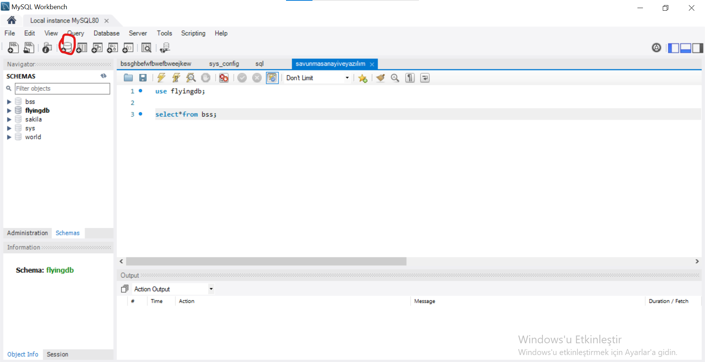table oluşturma
Şema içinde tableler oluştururuz bunun iki yolu vardır bir kod
use veritabanı_adı; /*burada kullanılacak veri tabanını yazıyoruz*/
create table tablo(
id int primary key auto_increment not null,
ad varchar(16)
);
Veya mysqlde veritabanımıza tıklayıp açılan kısımda table ye sağ click yapıp
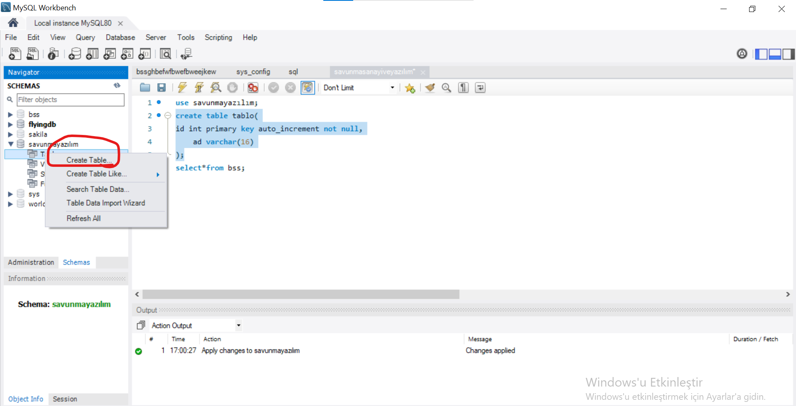Ondan sonra çıkan kısımda veri girip apply'a (sol altaki buton) tıklayın verileri girerken özellikleri unutmayın ve değişken türlerini yazın
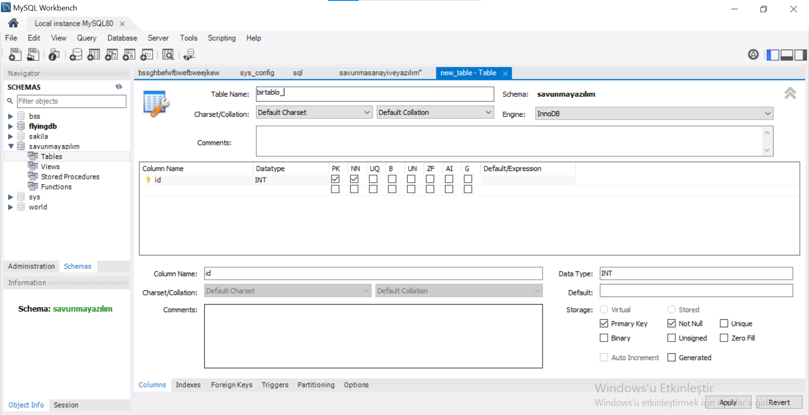select*from (tablo gösterme)
Burada tablonun altta nasıl gösterileceğini yazabilirsin
select*from tablo_adı;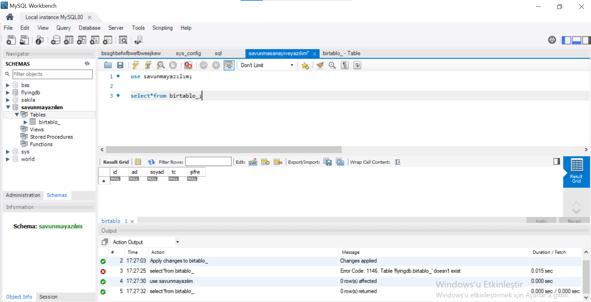
Otonom veri girme ve Sorgulama
Burada aşağıdaki şeyleri yapın
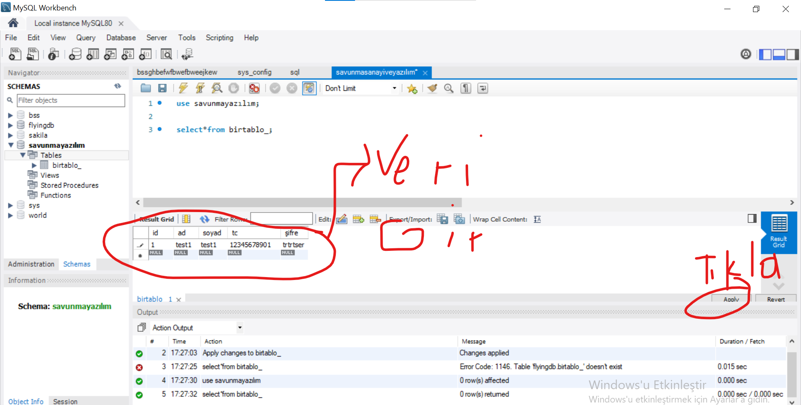bundan birkaç tane daha yapın ve sorgulamaya geçin
select*from veritabanı_adi where id < 5;/*id si 5'ten büyük olanları göster*/ select*from veritabanı_adi where id >3; /*id si 3'ten büyük olanları göster*/ select*from veritabanı_adi where id >4 and ad='ekrem'; /*id 4ten büyük ve adı ekrem olanları göster*/ select*from veritabanı_adi where id =< 5 ; id si 5'e eşit ve beşten küçük olanlar select*from veritabanı_adi where id => 5 ; id si 5'e eşit ve beşten büyük olanlar select*from veritabanı_adi where ad='Ekrem' or not soyad='Sivrikaya'; /* adı ekrem veya soyadı sivrikaya olmayanları göster*/ select*from veritabanı_adi where id between 3 and 8; /*id 3 ve sekiz arasında olanları göster*/ select*from veritabanı_adi where ad like '%em';/*em kelimesininin önünde birşey var*/ select*from veritabanı_adi where ad like 'em%';/*em kelimesininin arkasında birşey var*/ select*from veritabanı_adi where ad like '%em&';/*em kelimesininin önünde ve arkasında birşey var*/ select*from veritabanı_adi where ad like '%_em%';/*em kelimesininin önünde ve arkasında birşey var ve önünde rasgele bir karakter var*/ select min(id) from dersler;/*idsi en küçük olanı gösterir*/ select max(id) from dersler;/* idsi en büyük olanı gösterir*/
Tablo içini silme truncate
tablonun içini siler
truncate table tablo_adı;/*içini siler*/
Kolon(sütun) ekleme ve sütun silme
Burada bir tabloya kolon ekleme ve kolonu silmeyyi göstereceğiz
alter table tabloadi add column eklenecekkolonadi int ;/* kolon ekler*/ alter table tabloadi drop column silinecekkolonadi;/* kolon siler*/
Update güncelleme
burada güncelleme yapacağız tabloda
update tabloadi set kolonadi = 200;/*girilen kolonadının tüm verilerini 200 yapar*/ set sql_safe_updates =0;/* eğer bir sorun çıkarsa bunu çalıştırın*/ update tabloadi set kolonadi = 200 where id =1;/*girilen kolonadının idsi 1 olanların verilerini 200 yapar*/
Tablo silme
Tablo silmek için drop kullanılır
drop table tabloadı;
Veri ekleme
Burada manuel olarak veri ekleyeceğiz yani insert into
insert into tablo_adi (deger1,deger2, deger3, deger4) values ('1500','2000', '24', 'bordo bereli');/*veri ekler*/
Satır silme
deletle satır siler
delete from tabloadi where id =4;/*idsi 4 olan satırı siler*/
Left join ,Right join,inner join,union join
Burada farklı farklı iki tablo gösterilir
select * from tabloadi left join tabloadi1 on tabloadi.id=tabloadi1.id;/*iki tabloyu tabloadi idsine göre gösterir*/ select * from tabloadi right join tabloadi1 on tabloadi.id= tabloadi1.id; /*iki tabloyu tabloadi1 idsine göre gösterir*/ select * from tabloadi inner join tabloadi1 on tabloadi.id=tabloadi1.id; /*Tabloda sadece koşula uyanları gösterir*/ select * from tabloadi left join tabloadi1 on tabloadi.id=tabloadi1.id union select * from tabloadi right join tabloadi1 on tabloadi.id= tabloadi1.id;//union kullanarak ikisinide gösteriri left hoin ve right join
TRİGGER(TETİKLEYİCİ)
Tetikleyici şuradan tıklanır.

bunun üstüne gelip ingiliz anahtarı sekmesine tıklıyoruz ve çıkan tablodan şuna taklıyoruz
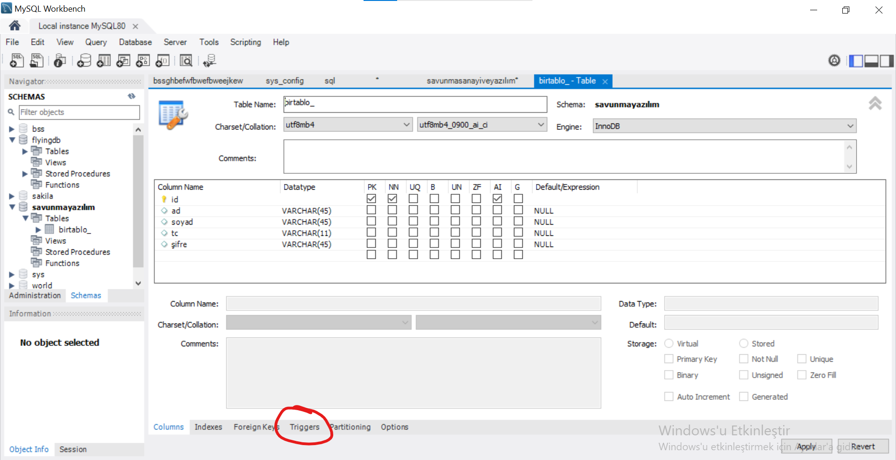Çıkan kısımda before update(güncelleme öncesi) , after update(güncelleme sonrası),before insert(veri ekleme öncesi) , after insert(veri eklme sonrası),before delete(silme öncesi) , after delete(silme sonrası) bunlar trigger olaylarıdır.Burada örnek olarak mesela bir proje yaparken maastan %15 gelir vergisi gidebilir mesela
Store prosedur
Fonksiyon olarak düşünebilirsiniz alttaki tıkladığınız yere açılan kısımda fonksiyon kodunu yazın.Apply edin
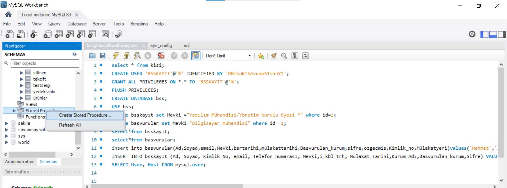STORE PROCEDUR ÇAĞIRMA KODLARI
call storeprceduradi(parametre_varsa_parametre_yoksa_yok);
C# ve MYSQL
C# içinde mysql için bazı nuget paketi yüklememiz lazım nasıl yapacağız
Aşağıda kodlarda üst kısımlarda class ve gösterimi ,tanımlanması,fonksiyonlarını bildiğinizi varsayıyorumtek bilmeniz gereken şey datagridviewadi.DataSource=nesneadi.fonksiyonadı();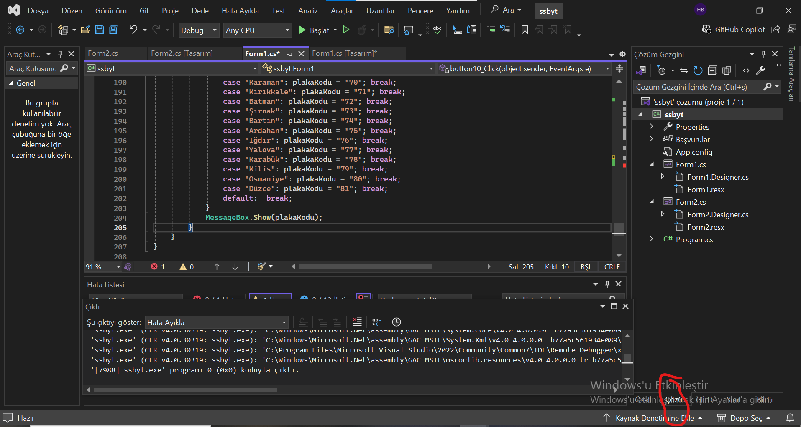
 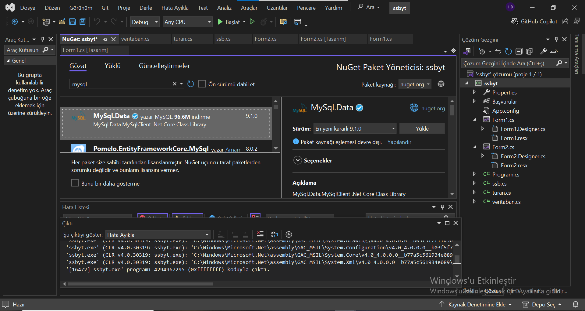
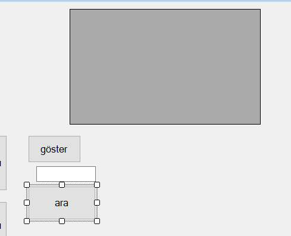
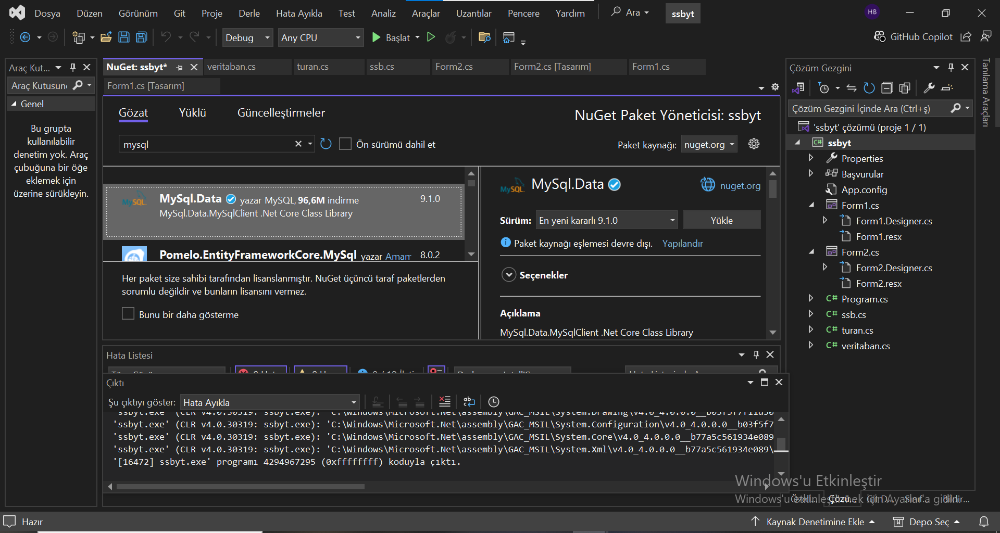
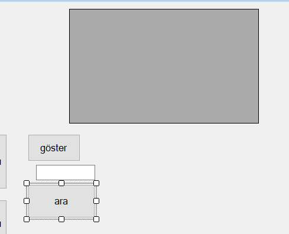
Form kodu
using System;
using System.Collections.Generic;
using System.ComponentModel;
using System.Data;
using System.Drawing;
using System.Linq;
using System.Text;
using System.Threading.Tasks;
using System.Windows.Forms;
using static System.Windows.Forms.VisualStyles.VisualStyleElement;
namespace ssbyt
{
public partial class Form1 : Form
{
public Form1()
{
InitializeComponent();
}
private void button14_Click(object sender, EventArgs e)
{
veritaban vr = new veritaban();
vr.baslat();
dataGridView1.DataSource = vr.veritabanigoster();
vr.kapat();
}
private void button15_Click(object sender, EventArgs e)
{
veritaban vr = new veritaban();
vr.baslat();
vr.polissoru(textBox3.Text);
vr.kapat();
}
}
}
SINIF KODU
using MySql.Data.MySqlClient;
using System;
using System.Collections.Generic;
using System.Data;
using System.Linq;
using System.Text;
using System.Threading.Tasks;
using System.Windows.Forms;
namespace ssbyt
{
internal class veritaban
{
string connetionString = "Server=localhost; Database = veritabanı_adi ;Uid=kullaniciadi; Password=sifre";
MySqlConnection conn;
MySqlCommand cmd;
public void baslat()
{
conn = new MySqlConnection(connetionString);
conn.Open();
}
public void kapat()
{
conn.Close();
}
public DataTable veritabanigoster()
{
string query = "select*from birtablo_;";//istenilen
cmd = new MySqlCommand(query, conn);
MySqlDataAdapter da = new MySqlDataAdapter(cmd);
DataTable dt = new DataTable();
da.Fill(dt);
return dt;
}
public void polissoru(string sifre)
{
string query = "select*from birtablo_ where ad =@aramadegeri";
using (MySqlConnection connection = new MySqlConnection(connetionString))
{
//try
//{
connection.Open();
MySqlCommand cmd = new MySqlCommand(query, connection);
cmd.Parameters.AddWithValue("@aramadegeri", sifre);
using (MySqlDataReader reader = cmd.ExecuteReader())
{
if (reader.HasRows)
{
MessageBox.Show("Polis sayfasına geçiş yapmaktasınız");
}
else
{
MessageBox.Show("Kayıt bulunamadı.");
}
}
// }
// catch (Exception ex)
// {
// MessageBox.Show("Error: " + ex.Message);
// }
}
}
}
}
Burada temel fonksiyonları verildi.Eğer başka bir olay yapmak istiyorsanız query veya istenilen yazan yere istediğiniz (insert into,update,delete,select*from vb. şeyleri) olayı yazınız.